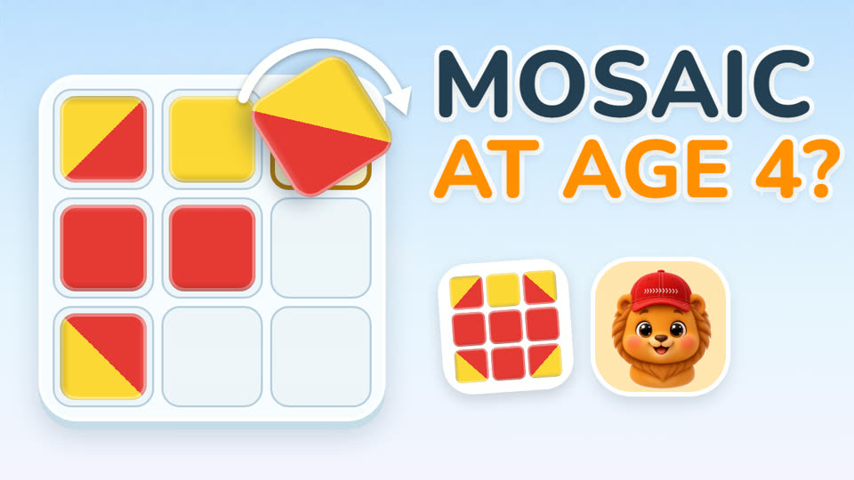

Mosaic Puzzles for Kids: How to Start at Age 4 (Step by Step)
Can a four-year-old copy a picture from coloured squares? Yes, and it's one of the best first logic games there is. Here's how to start, with paper and a few coloured squares.

3-minute video. Narrated in English with audio tracks and subtitles in Ukrainian, German, French, Spanish, Portuguese and Polish. The video loads from YouTube only after you press play.
What the game is
The idea is simple: there's a sample picture and an empty board, and the child rebuilds the picture square by square. Some squares are one colour, others are split diagonally into two. It's a classic exercise, well known from the Nikitin method, where children build patterns from painted cubes. It trains attention, spatial thinking and patience.
Step 1: Start with 3×3 and solid colours
Start small: a three-by-three board and only solid colours, no split squares yet. On paper it takes two minutes: draw a grid, cut out a few coloured squares, and draw a simple sample, like stripes or a cross.
Step 2: Look, find, place
Teach one simple routine: look, find, place. Point to one square in the sample, then find the same spot on the board. Start from a corner, because corners are easiest to match, and go along the row.
Step 3: Two-colour squares
Now add the split squares. This is where the real thinking starts, because the same square can be turned four ways. Give your child one paper square and ask: where should the yellow corner point? Let them turn it in their hands before placing it.
Step 4: Mistakes are part of the game
Don't fix the picture for your child. Instead, put the sample next to the board and ask: what's different? Finding the difference on their own teaches more than any correction.
Step 5: Keep it short and fun
Five to ten minutes is plenty at this age. Stop while it's still fun, and praise the effort, not just the finished picture: "You turned that tricky square all by yourself!"
Step 6: When to move on
When three-by-three feels easy, try four-by-four, usually around age six. Five-by-five is a good challenge for eight to ten. And there's another way to make it harder: show the sample without the grid lines, or show it for a few seconds and then hide it.
A ready-made version: Mozaimo
If you'd like everything ready to go, that's what we made Mozaimo for. It has 260 pictures in three sizes, the three ways of showing the sample, and a Workshop for inventing your own pictures. You can't lose: a wrong square simply bounces back. The first levels of every mode are free, then it's a one-time purchase. No ads, no data collection, works offline.
More for parents
How to teach your child sudoku at age 4 — no numbers needed, with a free printable.